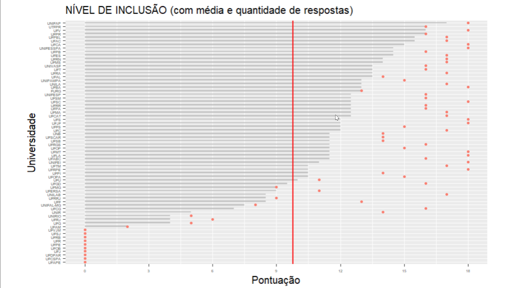

ONG Desiguais!
Acesse relatórios e índices com facilidade
Consulte dados atualizados sobre nossos projetos, impacto social e estatísticas relevantes para a inclusão educacional.
Considere os gráficos a seguir:
Fronte: da Silva Cardoso, Camila. Educação Especial revelada: a implementação desta política pública nas Universidades Federais do Brasil / Camila da Silva Cardoso. - Recife, 2023. 29 p. : il., tab.
Este gráfico apresenta os níveis de inclusão em diversas universidades federais do Brasil, destacando o progresso e os desafios enfrentados por cada instituição na promoção da acessibilidade e apoio educacional para pessoas com deficiência.
Os dados foram coletados através de pesquisas internas e feedback das Universidades Federais, refletindo o impacto de nossas iniciativas e programas de suporte.
Utilize essas informações para tomar decisões estratégicas, identificar áreas que necessitam de melhorias e celebrar os avanços alcançados em nossa missão de promover a inclusão educacional.
Fronte: da Silva Cardoso, Camila. Educação Especial revelada: a implementação desta política pública nas Universidades Federais do Brasil / Camila da Silva Cardoso. - Recife, 2023. 29 p. : il., tab.
O gráfico mostra o desempenho das Universidades Federais em diferentes dimensões relacionadas à inclusão educacional, como acessibilidade física, recursos de apoio, formação de professores e políticas institucionais.
Essas métricas são essenciais para avaliar a eficácia das estratégias implementadas e identificar áreas que requerem atenção adicional.
Como Administrador, você pode usar esses dados para orientar políticas, alocar recursos e promover iniciativas que fortaleçam nosso compromisso com a inclusão e a equidade no ambiente acadêmico.
Nossos projetos!!
Curso de Libras: Aulas regulares de Língua Brasileira de Sinais.
Bolsa Permanência:Apoio financeiro ao estudante deficiente e baixa renda.
Campanha “Minha Universidade Também É Minha”: Sensibilização sobre direitos e inclusão de estudantes com deficiência.
Mentoria Acadêmica: Acompanhamento individualizado para estudantes com deficiência.
Apoio Psicológico: Espaço seguro para discutir desafios e estratégias de enfrentamento.
Oficinas de Capacitação: Treinamentos para professores e funcionários sobre práticas inclusivas.
Eventos de Conscientização: Palestras, seminários e workshops sobre inclusão educacional.
Estamos sempre buscando novas parcerias e voluntários para ampliar nosso impacto. Junte-se a nós nessa missão! Casatre-se!
Relatório de Transparência e Desempenho, Ano 2024
O relatório detalhado do desempenho da ONG Desiguais no ano de 2024 está disponível para download. Este documento inclui métricas chave e análises de impacto.